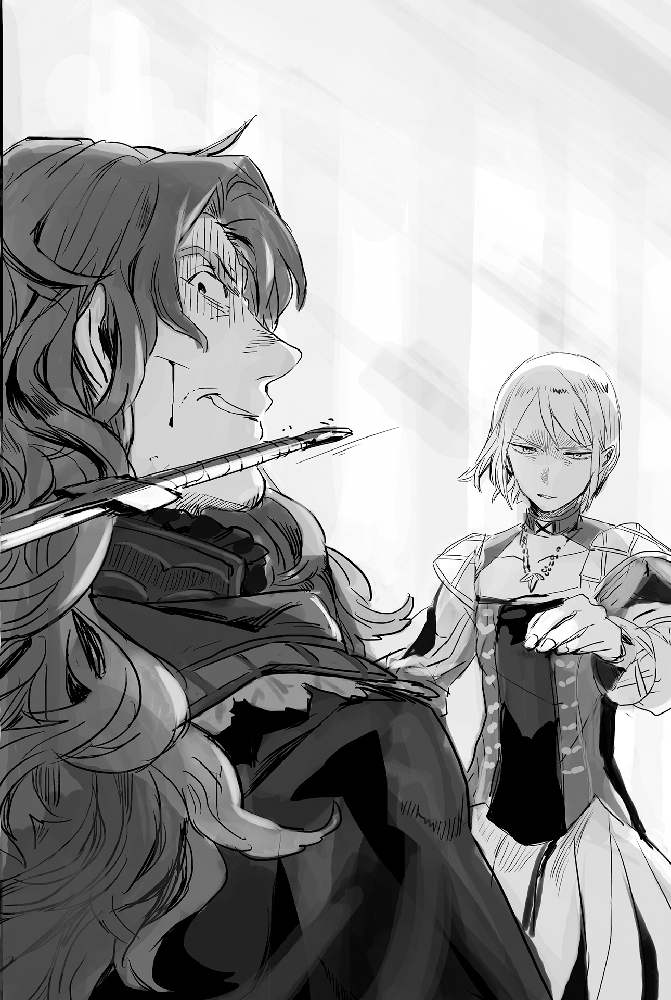

Chapter 3 – A New Journey
.
Part 1
The mansion was in an uproar after Baldr was brought in with serious wounds, which looked atrocious just at a glance.
All of the available healers were summoned while Selina’s Savaran Company also went about procuring high class medicines for him.
Ignis could only stand there speechlessly with a shaking fist as he saw his son’s appearance.
.
Fortunately, a kid’s healing capability was high. Baldr was recovering at a rapid pace.
However, as the right arm was violently snapped until the point where the bone was jutting out and the left hand’s fingers were almost torn off, it needed about one month until they recovered even with the best treatment available.
Seyruun was nursing Baldr to the point that she even forgot to sleep.
Originally the head maid should order her to rest, but she took Seyruun’s feelings into consideration and allowed her to continue.
In fact, Seyruun couldn’t stop crying for more than half a day. Her mind might have become unbalanced if she wasn’t allowed to look after Baldr.
.
『──You won’t lay your hand on them, even if it costs me my life.』
.
The image of Baldr’s back when he said that as he covered for Seyruun and Selina standing behind him was burnt into the back of her eyelids, and wouldn’t vanish even now.
She thought that he was reliable.
She also felt happy as a woman.
──That was until Baldr was sent flying like a tattered and worn out rag.
The jutting white bone, the trickling blood, the trembling body……she felt a freezing chill in her back when she saw Baldr in such a state.
Even Baldr would be injured if he was slashed. He might die if he got into a fight.
When Seyruun noticed such an obvious thing, she immediately became scared that Baldr was fighting.
.
Don’t die.
Don’t die.
Next time, I’ll be the one to protect you.
It would be better that I died instead rather than having you injured in my stead.
.
This feeling didn’t come solely because she was starting to be conscious of Baldr as a man that caught her eyes lately.
When she saw Baldr losing consciousness, for the first time she realized that everything in her life had been revolving around him.
That was why she couldn’t forgive herself, who had become a heavy burden for Baldr.
Anything was fine.
She wanted to become useful for Baldr, even if it was in only one thing.
.
「Sey-nee, are you crying?」
Baldr finally opened his eyes on the third morning after the treatment.
Baldr’s kind gaze didn’t look any different from usual. Seyruun who was peering into those pretty marine blue eyes broke into a broad smile and leapt at Baldr’s neck.
「Young master! Young master Baldr!!」
「Ouch ouch……Sey-nee, it’s already. Everything’s already alright.」
Baldr caressed the hair of Seyruun who was crying a ‘waah-waah’ as she realized that he had survived that hopeless battle.
Using his head that was still hazy after waking up, Baldr recalled the memory of Sanai’s personality coming out and defeating Torus.
If he had to make a comparison, what happened only felt like a memory that wasn’t accompanied by a sense of reality, like watching a TV broadcast.
By feeling Seyruun’s soft limbs and body warmth, he finally caught on that he had returned alive from that deadly battle.
Seyruun must have reached the height of her fatigue. She immediately stopped crying and fell asleep while still hugging him.
「Sleep well, Sey-nee.」
Baldr felt somewhat reluctant to separate from the feeling of Seyruun’s breasts, which had lately been growing considerably, as he put his hands around her waist in order to gently lay her slender body down on the bed.
.
Part 2
Meanwhile, at the suburban residence of the Cornelius House, Zirco and the other veteran mercenaries were huddling their big bodies together as they trembled like a bunch of scared puppies.
「It has been a long time, eh, Zirco. No, should I call you Zirco the Gale now?」
「Do……don’t be so formal like that, big sis. Just call me Zirco like usual……」
Zirco couldn’t stop cold sweat from drenching her whole body even as she said that.
Even that arrogant Jamqa was keeping silent with a pale face.
The killing intent that Maggot was giving off was too strong for anyone here to carelessly interrupt her.
Not one of them could say a single joke.
Even Zirco and the other veteran warriors here were like green rookie soldiers before the aura that was covering Maggot. It gave off an intense and thick smell of death.
.
The Silver Light Maggot was a famous woman, a legend even while she was still alive.
Normally rumors tended to be the exaggeration of the truth, but in her case, the truth was in fact even more exaggerated than the rumor.
Many men, including lower class nobles, tried to woo Maggot, who was also an incomparable beauty. However, she declared that she wouldn’t go out with a man who was weaker than her.
As a result, during the several years of war, Maggot received challenges from more than a hundred men.
The end result was obviously her staying undefeated.
There were also nobles who challenged her with ten people at the same time, but they were defeated handily without Maggot even breaking a sweat.
That monster among monsters who was even said to rival a battalion by her lonesome could still scatter a thick bloodlust, one that made a person feel like they would be devoured even now. It would be too much if one were to tell Zirco and the others to not be scared in this situation.
Zirco could feel it more than anyone. Even if all of them stood against Maggot together, they would be slaughtered in just a few seconds.
.
「And? Who is this man that made my son go through something like that?」
「T-the chief said, they were the subordinates of Marquis Selvi.」
「Fufufufu……looks like I’m being underestimated. Are they seriously trying to pick a fight with mee?」
Maggot chuckled with a very amused expression.
But Zirco and others who were shown that fiendish smile couldn’t bear it at all.
They were assaulted with a misapprehension that if they spoke carelessly here, Maggot might go off to attack Marquis Selvi right away. Their backs unconsciously shivered.
The most terrifying thing was that they absolutely believed that Maggot might do exactly that.
There was a saying that “A smile is originally an aggressive expression”. Zirco never realized just how true that saying was until this day.
「Even an idiot son like that is someone who I have trained. For him to get beaten up that badly, the guy that was sent here must be really something.」
「Yeah, the guy that the chief faced was really dangerous. If only he had ten more years to train, then perhaps he would have been able to give you a good fight.」
「Hee……Zirco. You left Baldr to face that kind of man by himself. You were really taking it easy, weren’t you?」
(Geeh! I stepped on a landmine!)
(Zirco, you bitch! Don’t say anything unnecessary!)
(W-we didn’t do anything wrongg–!)
(You idiots! It’s times like this where we’re sharing our lot with one another!)
Zirco and co were shaking in their boots waiting for when Maggot was going to mention their responsibility of letting Baldr almost die. It felt like they were going to go crazy with fear.
She didn’t want to imagine it at all, but in case Maggot blamed Zirco’s ineptitude, she would have no way to oppose her.
Before this, she thought that she might have closed the gap between her and Maggot a little after Maggot had retired from the mercenary business for ten years, but it seemed like the gap had widened even further instead.
It wasn’t like they had tried fighting for real, but Zirco wasn’t an amateur who couldn’t ascertain that much of a difference in strength.
「And, what’s your excuse?」
「Thaat’s……b-because, chief ordered us to hold back the other guys……」
「The best that all of you could do was only hold back the small fries? Perhaps it’ll be better if I retrain you guys from the start again.」
「Please spare us. We’ll die!」
Maggot hadn’t been good at holding back since the past. There was an anecdote that when she was entrusted with training the new recruits, more than half of them were physically broken.
To say nothing of the day when Maggot needed someone to vent her anger on, even someone as skilled as Zirco seriously almost died.
.
「You’re really fortunate, eh, Zirco……」
.
In that instant, Maggot’s voice turned so low that it was almost freezing. Her voice changed to something like that of a fierce beast’s growl.
Maggot’s deathly presence swelled up drastically in an instant, as though the air had thickened. Even now after ten years had passed, her aura that was once extolled as something akin to the death god of the battlefield was still going strong.
「Survival is the mercenary’s number one priority. I don’t have anything to say about that. But, if Baldr had actually died there, I would twist your head off even if I would’ve had to chase you till the ends of the earth.」
「Haha……big sis, that joke isn’t funny you know……」
She was found out!
Maggot found out that she was going to abandon Baldr and run away!
Zirco’s facial muscles were convulsing. She felt sweat trickling out like a waterfall not only from her back, but also from her forehead and cheeks.
That just now wasn’t a joke. Maggot was someone who would really do it when she said she would do it. She also had more than enough strength to carry out her words.
However, she would only worsen her situation further if she honestly acknowledged it.
(T-thank god! Thank god I didn’t run away!!)
.
At that time when Baldr stood up, 99% of Zirco’s mind had been fixed towards running away.
That was because she could only imagine their annihilation if Torus was heading their way.
There was no mercenary who would fight to the death if their employer had died.
Zirco’s decision wasn’t mistaken as a mercenary, and Maggot herself also recognized that.
But the responsibility of that decision being Baldr losing his life was a completely different matter from that.
It was a terrifying prospect to even just imagine having her head targeted by a Maggot that had transformed into a revenge-filled demon.
「That stupid son certainly needs to be punished but──you guys need punishment too as his underlings. Your contracts with him are still not rescinded, right?」
When they heard Maggot’s words, the mercenaries who were all mature adults turned pale and raised their protests.
「Wait a second! Our job is over already!」
「Rather, what do you mean punishment!?」
「Please let me go-! I have a wife waiting for me back home……」
There was also a man who made a dangerous confession (raising a death flag) amidst the panic, but Maggot only grinned fiercely and handed down her ultimatum arrogantly.
「Be thankful that you guys can still keep your life.」
Maggot was quietly but furiously raging because her beloved son was almost killed.
If she didn’t vent out her stress somewhat, she would seriously go off alone to attack Selvi territory.
From Maggot’s observation, with Zirco and the others’ capabilities, they would serve quite well for her stress relief, at least to a certain extent. They should be able to deal with it without losing their lives, at least.
Zirco and others who were pitifully assigned the role of sacrificial lamb cursed their own misfortune and prayed to god that they would be able to see the sun tomorrow.
.
Part 3
What was waiting for Baldr when he was finally released from his bed was a call from his father Ignis.
Actually, he still hadn’t fully recovered, but in front of Seyruun who kept watching over him worriedly, he had to act strong and showed her that he was right as rain here.
「Young master Baldr, are you really alright? I wonder why the master is telling me that I can’t come along……」
「Because we need a talk between just the two of us, as parent and child, perhaps?」
Although there was no way that this call was for that kind of indulgent reason.
Baldr became seized with a gloomy feeling when he imagined his father’s anger, but this was just him reaping what he sowed. He couldn’t run away from this, nor did he have any such intention.
「I’ll change your bandage as soon as you return, young master. Also, I’ll prepare a snack that I’ve been saving!」
It felt like Seyruun had become even more overprotective than before since Baldr got injured.
He didn’t know whether she was joking or serious, but when she appeared last night with only a towel covering her body and asked him 「Should I wash your back?」, his lower body almost reacted.
Perhaps it was because of the maid moe that Masaharu’s memory imprinted into him…….
How should he interact with Seyruun from here on……Baldr felt anxious thinking about it.
.
「Excuse me.」
「Baldr, huh. Enter.」
Ignis’s office was a boorish place that used a lot of oak wood to give it a solemn atmosphere. There were almost no decorations here.
The mountain of paperwork that was arranged neatly on the desk was most likely the result of the sweat, tears, and blood of his excellent retainers instead of Ignis himself.
Ignis’s expression was too stiff and stern for a father who was welcoming his son who returned alive from the border of life and death.
Baldr realized that his own prediction was correct.
It was depressing, but he would be even more troubled if Ignis was so happy-go-lucky that he didn’t get angry at him here.
.
*Doga-!*
.
Baldr’s body was sent flying, along with a dull hitting sound.
He knew it was coming, but he couldn’t even follow the fist’s speed with his eyes.
Baldr was punched while he was completely unguarded. He rolled on the office’s floor without stopping and crashed on the oak door that he had just entered before his body finally stopped.
Blood spurted out of his nose and several of his remaining baby teeth were broken. The inside of his mouth was wet with blood.
「Do you understand why I hit you?」
「──Yes.」
He had no intention of making excuses.
Everything was caused by his conceit.
If this was a battlefield, he wouldn’t be able to protest if he was beheaded for acting on his own.
「Since when you have been suspecting an intervention from Selvi?」
「I believed that it didn’t take two months since the farm started operating at full-scale production before the information reached Marquis Selvi. After that, he started collecting information until he ran out of patience……at that point I believed that he would soon take action, without a doubt.」
「Why didn’t you report that to me?」
「For giving the appearance that the farm is the project of a private business called the Savaran Company instead of the project of the Cornelius House. I thought that carelessly making this information known would only bring trouble. And then……I also thought my own strength would be enough to take care of it.」
Yes, he arrogantly thought that there was no way he would lose to mere subordinates of Marquis Selvi.
He was so embarrassed that he wanted to die from remembering his earlier self, which had fell into that feeling of omnipotence that chuunibyou often brought.
Perhaps black history was referring to this kind of thing.
「That’s quite the confidence. And, were Selvi’s dogs as weak as you thought?」
「No. One of them was a magnificent knight, who for the first time made me think there was someone other than mother that I couldn’t win against.」
If Seyruun and Selina weren’t there at that time, if he wasn’t resolved to protect them, it was extremely doubtful on whether Baldr (Sanai) would be able to stand up once more or not.
The wall that Baldr felt from the difference of skill between him and Torus was so high that it made him think like that with conviction.
The likes of Maggot and Ramillies were far too strong for him, to the point where they couldn’t be an object of comparison.
In that light, perhaps Torus could be described as Baldr’s rival, who had given him his first taste of defeat.
「What would’ve happened if you were unable to defeat him?」
「Seyruun and Selina would be kidnapped, while the mercenaries would be annihilated.」
If Baldr stayed defeated at that time, Seyruun and Selina would undoubtedly have been kidnapped and brought to another country.
And then after they had given all the information that they could, the possibility that they would be liberated was nonexistent.
The other side would have to hide the background and objective of the kidnappers. The two of them would be killed without any doubt.
Baldr had exposed the lives of his important people to danger because of his arrogance.
「I heard that it was a coincidence the two of them were there. Originally, the target of the kidnapping should’ve been the children of our territory. If you had died, the innocent children would be the ones to die next.」
「It’s as you said.」
He intentionally exposed his people to danger, even though he should be protecting them at all costs.
That was the essence of the problem here.
Baldr knew very well just how much Ignis treasured his people. It made him gnash his teeth even harder at his own foolishness.
He had properly trained the children on how to evacuate.
The children didn’t hold any valuable information anyway.
With Zirco and the other mercenaries there, it wouldn’t be that hard to suppress the enemies.
Because Baldr had such optimistic thinking, he didn’t seriously consider how he was exposing the children’s lives to danger.
「We nobles exist in order to protect the nation and the people. We must never expose the people to danger for our own convenience. You were lacking such pride and resolve.」
Baldr nodded wordlessly.
It might be easy to get the wrong idea because there was the memory of Sanai and Masaharu inside Baldr, but the essential part of Baldr’s mind was still that of a twelve year old boy.
Even though he worked out a political scheme that was unbelievable coming from a child and boasted a martial skill that would make adults lose face, it was nothing more than a surface appearance that wasn’t accompanied by the resolve to bear the responsibility and the experience of entering a battle of life and death.
That fact was exposed from the attack this time.
「Perhaps you’re thinking that I’m an unreliable father……even so, you’re still a child. At the very least, I won’t mistake the gravity of what I should protect, unlike you.」
Ignis too was aware that he was third rate as a politician and as a territorial ruler.
He also understood that the reason why Baldr hesitated to report to him was because he was taking that into consideration.
After all, he didn’t even know that his territory was producing sugar until the few noble friends that he was interacting with asked him.
He had the self-confidence that he would protect the people even if it cost him his life, but Baldr was more capable than him in regards to enriching the people’s life.
However the act of using the people’s lives as a betting chip in exchange for those riches was violating Ignis’s taboo as a noble.
Because they were honorable nobles of Mauricia Kingdom, there was a line that they mustn’t cross no matter what. There was a pride that they had to protect no matter what. That was what Ignis believed.
Actually, the number of nobles who didn’t have such a belief might be the majority, but Ignis didn’t give a damn about such things.
At the very least, the members of Cornelius House that rose to their position as a military family had to be like that. The head of the house mustn’t forget that.
Because of the case this time, Ignis recalled where he learned his pride and cultivated his conviction as a noble.
「Someone who lacks resolve can’t serve as a lord even if they have the talent. Baldr, originally this should be for when you’re fourteen, but go enroll into the royal knight academy next month.」
The royal knight academy was just like its name suggested. It was a government school for training knights.
Ignis also spent his juvenile years from when he was fourteen till eighteen years old there.
He knew a woman for the first time and learned how to play in the red-light district also around that time. Though of course, this was a secret from Maggot.
Originally, someone should be fourteen to enter this academy. The exception of enrolling there as a twelve year old was accepted by that General Ramillies.
Ramillies was finally freed from his duty after ten years passed since the end of the war. Starting from last year he was appointed as the headmaster of the royal knight academy while still keeping his rank as a general.
Ramillies welcomed Baldr’s slightly early enrollment wholeheartedly.
「I have two matters that I wish to request.」
「Let’s hear them.」
「It was my blunder that exposed the children in the farm to danger, but that place is a precious workplace for them to earn wages. Please continue the farm and safeguard it so they can still have a place to work.」
No matter the era, child labor was always cheap and wasn’t really worth it.
Baldr’s farm where there was light work that even children could do and could earn decent pay was also a precious source of income for the children’s parents.
In addition, the farm was also a part of Savaran Company’s income source. A part of the profit there would also be circulated inside the Cornelius territory as a tax.
The negative effect of this farm being abolished here would be too great.
「We still have enough spare soldiers. I promise that I won’t let Selvi’s men try anything with it.」
「Thank you very much. Second, there will be nobles who try interfering with Savaran Company in the future. However, that company is indispensable for the development of the Cornelius territory. Please don’t allow any other house to interfere, no matter what.」
Savaran Company right now was a tree that was growing money.
There might be invitations like 「I’ll give you preferential treatment, so how about moving to my territory?」 or threats like 「If you don’t tell me the way to create sugar, I’ll use my authority as noble to charge you with a crime」 to the company.
It was unthinkable that Selina would betray Baldr, no matter how good the offer, but there was a high possibility that a noble who envied the Cornelius territory’s prosperity would try something malicious.
「The company of that Selina girl, huh? I’m also in her debt for procuring valuable medicine for your treatment. I swear I’ll help her as long as it’s within my capability.」
It was these straightforward decisions and genuine sincerity that was the virtue of Ignis which he ought to be proud about.
At the same time they were also his flaws, but it wouldn’t matter if Baldr compensated for that.
If it was another feudal lord who was in Ignis’s position, there was a possibility they would get the secret from the Savaran Company and monopolize it for their own profit.
Did Ignis understand just how great a source of wealth this could become?
Most likely he didn’t understand it, but even if he actually understood, Ignis’s answer would still be the same. Baldr didn’t doubt that.
.
「Then one last thing──」
Ignis’s face changed completely from the stern face of a lord into a smiling face. He crouched down and caressed Baldr’s silver hair roughly before hugging him with all his strength.
The hug of his father after so long was rugged and hard, unlike Maggot, but it was filled with a reliable sense of security that couldn’t be compared to anything.
「Thank god you survived. You had me worried!」
「Tou-san!」
It was like a dam broke and tears flooded out one after another. Baldr cried while a part of his mind felt like what was going on was happening to somebody else.
His father’s forgiveness.
How he was actually feeling absurdly terrified from almost dying.
How he couldn’t sleep at night when thinking, ‘what if Selina and Seyruun died from what happened?’
Those thoughts became jumbled and tangled with one another and he couldn’t stop his emotions from overflowing out of his heart.
Baldr cried loudly, like there was something broken inside of him. This time for sure, he accepted from the bottom of his heart that he was nothing more than a twelve year old brat.
.
Part 4
With his enrollment into the knight academy decided, Baldr who was sorting out his room folded his arms and groaned.
It could be said that he was in agony.
In the end, was it alright for him to entrust himself to this impulse that was rising from inside of him?
He worked his brain for a long time, thinking hard of what he would obtain and what he would lose by doing this. Even so, the answer wouldn’t form at all.
Gold coins were piled up like a mountain in front of Baldr’s eyes.
The profit from the gold plated works and sugar shipment had been paid to him in proportion to the amount of money he invested, excluding the twenty percent for the intermediation fee.
In addition the recipe fee for mayonnaise, the sales fee of Othello, and fees from some other things were also growing smoothly. Before he realized it, there was already a great amount of gold coins piling up in Baldr’s possession.
.
Yes, gold coins! Gold coins!
The dazzling radiance of gold that was throwing the rational mind into chaos was now in front of his eyes!
This moment had finally come. No wait, wait, please wait I’m begging you!
.
The three personalities that were fused inside Baldr were thinking things that ran counter to one another.
Baldr who had been raised as a noble, Masaharu who possessed the good sense of a modern person, the two of them harbored a feeling of avoidance toward this kind of temptation that was hard to be erased.
However, the enormous desire of Sanai who had become an equal existence within them greatly surpassed such a feeling of avoidance.
Baldr was swallowed by an impulse that was difficult to resist. He was unconsciously forming words in order to convince himself.
「T-this is the form of my gratitude toward Sanai-dono……! The proof of my gratitude toward Sanai-dono, who is my life’s savior-! Its my overwhelming gratitude!」
.
Baldr finally resolved himself and started lining up the gold coins on the floor.
Because the gold coins weren’t flattened like koban (small oval gold coins used in the Edo period), the surface area a single coin could cover was small, but it didn’t matter whether it was koban or gold coins. The profoundly mysterious aura that could only be emitted by gold didn’t change at all.
Baldr’s eyes quickly became enchanted by that dazzling radiance. His expression turned ecstatic.
「This radiance……this pure radiance is driving me mad!」
Baldr was lining up the coins one by one. A grin of pleasure was forming on his mouth. Soon he might even start drooling.
The number of gold coins that he saved up was actually more than a thousand.
It was an extraordinary amount when taking into consideration how it had only been half a year since Baldr started earning money.
However, the amount was still insufficient to completely cover the whole floor’s surface.
He had to earn even more and more money in order to completely cover the room with gold coins too……that was Baldr’s thought.
It would surely be a magnificent view if a room that was the size of his father’s office was filled with gold coins all over.
But he couldn’t ask for something that didn’t exist, so Baldr spread out the gold coins with some distance between them. With that he was somehow able to cover about three tatami’s worth.
.
(──Should I?)
.
As expected, Baldr’s rational mind was hesitating with the gold coins spread out in front of him. However, his emotions were surging with excitement. He was even feeling an impatience that made him want to yell even now.
His throat felt parched. Baldr was instinctually aware that in order to cure this thirst, he could only carry it out.
Baldr suddenly took off his clothes and threw them away.
His healthily tanned skin and his limbs that still had scars that looked like welts on them even after healing were laid bare.
Only half a year was left till he became thirteen. The muscles that were starting to fill his body little by little and the skin that was still leaving behind childish softness had the beauty that might make someone with a taste for little boys get a nosebleed.
Of course, Baldr himself wasn’t really narcissistic.
What he had was only an abnormal obsession and an affection towards money.
.
「I CAN FLYYYYY!!」
.
Baldr leapt towards the sea of gold coins with a smile on his face, as bare as the day he was born.
Baldr spread out his hands as though to embrace the gold coins that were approaching before his eyes and his whole body touched the floor──.
.
Part 5
*Roll roll roll roll……bam!*
*Roll roll roll roll……bam!*
*Roll roll roll roll……bam!*
「Gee-hya-hya-hya-hyaaaa!!」
At the villa of the Oka Clan, the retainer of Gamou Clan. It was a custom for a secret event to be carried out there every month. Right now that event was underway with great enthusiasm.
「If only our lord doesn’t have this kind of habit……」
「Indeed……well, the lord wouldn’t be the lord if he weren’t this interested in money.」
「It’s not like it’s a bad thing to love money. But this is……overdoing it, isn’t it?」
The two samurais smiled wryly while nodding at each other.
Their lord, Oka Sanai would blanket the floor of his room with koban once a month. Then he would roll around on them naked. Before he knew it the rumor of such a strange habit had spread, forcing the retainers of Oka Clan to feel extremely ashamed.
「Uhihihi……unbearable-! This is unbearableeeeeeee!」
Sanai’s figure that was rolling from corner to corner inside the room and bumped on the wall before reversing direction stark naked could only be said as perverse, even in this era filled with so many eccentrics.
Shockingly, this strange habit would continue without fail until Sanai had become completely bedridden.
Oka Sanai Sadatoshi──he was a man who had never wavered to the bitter end (this was a true historical fact).
.
「Uhoooh! It came! It came! IT CAMEEEEE!!」
In battle, he was a general with peerless courage and overflowing with ingenuity. Even in the time of peace he governed the people well. He wouldn’t be negligent in making preparations for the critical moment. He was a lord that his retainers were proud of and respected from the bottom of their heart.
Except for this habit.
「Can’t he……restrain himself a bit more?」
「This habit would have been cured a long time ago if the lord could do that.」
The pitiful retainers looked at each other’s face and let out a long sigh while deciding to treat this as if nothing were going on.
.
Part 6
Baldr was feeling the texture of gold coins on his back, chest, cheeks, fingers, everywhere. An eerie laugh that was unbefitting a child’s leaked out of his mouth.
.
「Fuhehehehehehehehehehehehe」
.
How fun! How can there be something this wonderfully moving in this world! The seductive sensation of gold on the bare skin felt sensual, even.
Kuh……if only there were more of them, I’d be able to taste the gold even more.
*Roll roll roll roll roll-*
Baldr was rolling around in every direction inside the room. There was a feeling of nostalgia, even though this was his first time doing this since he was born. He was getting absorbed into the act.
It didn’t feel like he would get tired of this, no matter how long he was doing it.
The fragrant scent of gold, the warmth of gold that could only be felt with his bare skin.
The cover that this was his show of gratitude toward Sanai had gone flying somewhere unknown.
Baldr swore deep inside his heart that he had to save up more and more money so that he could taste this supreme bliss once more.
.
Coincidentally around that time, Seyruun had been told about Baldr’s enrollment in the royal knight academy from Ignis personally. Now she was staring at empty air with an expression that was lacking in vigor, as though she had forgotten to put on her smiling face, along with its charming dimple.
(Young master Baldr will be gone from my side……)
Who should she devote herself to take care of if that happened?
Even though Seyruun’s everything was dedicated to Baldr from the time she woke up in the morning until she went to sleep at night.
It was fine even if she was unable to do anything, she wanted to go to the royal capital to accompany Baldr. She tried making a direct appeal for that, and yet the royal knight academy was a semi-military establishment. Living together with other students in the dormitory was also a part of the training there.
Naturally there were also noble children among the students, but as expected it seemed they weren’t allowed to be accompanied by servants.
「Uu……hics……」
The sadness of being torn away from Baldr’s side caused large teardrops to spill out of Seyruun’s eyes.
Since that tragic day, Seyruun felt like she had returned to the days when she was still a little crybaby.
To think that she was this dependent on Baldr.
「Uuh, young master……young master Baldr!!」
Since it had come to this, there was no other choice than asking Baldr himself to take her along.
Even if Baldr had to live in a dormitory over there, there was no way he would be satisfied with just studying in the academy.
His business dealing with Selina would still continue. It would be more convenient for Baldr if he had someone to take the role as his messenger in the capital.
If push came to shove, she wouldn’t mind even if she had to work in the dormitory as a maid and do the menial chores there.
That’s right! That’s a good idea!
Seyruun thought that it was a really good idea and broke into a small run towards Baldr’s room. She couldn’t push down her eager feeling and put her hand on the door without even knocking.
And then the door of destiny was opened wide to show something that should be absolutely impossible……normally.
「Young master! Please listen to……my request…………for?」
.
*Click*
Behind the opened door, Baldr could be seen. Stark naked. Frolicking in gold coins, not a thing covering his body.
「Young……master……」
「Sey……nee……」
The saying of “It felt like time had stopped” must exist for this kind of situation.
Some more time was needed until their brains were able to comprehend just how significant the situation that they had encountered right now.
「………………」
「………………」
What burst the extremely awkward silence that felt like it would continue for eternity were the yells that broke out five seconds later.
.
「NOOOOOOOOOOOOOOOOOOOOOOOO!」
「UWAAAAAAAAAAAAAAAAAAAAAAAAAA!」
.
Seyruun screamed as though she had been released from a binding curse. Baldr hurriedly hid his crotch and pulled the clothes that he had thrown around haphazardly toward himself.
「Hawawawa……young master Baldr’s p○n○s is, his p○n○s is……growing big and going buwoooh……」
「Don’t say it Sey-nee! I’;m begging you don’t say anything further than thatttttt!」
Even the sorrowful scream of Baldr’s soul couldn’t reach Seyruun.
Seyruun’s head was rocking back and forth like a broken doll. She continued muttering with eyes that were lacking focus.
「Buwoooh……Young master buwoooh……」
For Seyruun who had just entered puberty, Baldr’s lethal weapon that had grown further than she imagined when she still thought of him as a kid was too strong of a stimulation.
「I-it’s over……time……if only I can turn back the timeeeee!」
A girl who he was just starting to feel conscious toward had witnessed his shameful appearance, one that shouldn’t be exposed to anyone. The mental damage from that wasn’t something ordinary.
Baldr was writhing violently like a former chuuni patient who had his black history exposed, wanting to die rather than living on in shame.
It was only thirty minutes later when the head maid finally discovered Baldr who was tearing off his head with an expression of despair and Seyruun who was still continuing to mutter 「Buwoooh, buwoooh」 .
Even when she tried to ask what happened, the two of them stayed silent and didn’t say anything.
And then for some reason Baldr wouldn’t take a single step out of his room until the day before his departure to the knight academy.
This incident left behind a deep wound in Baldr’s heart that he buried as deeply as he could.
『It’s not mine fault』
Perhaps Sanai had whispered that or perhaps not, nobody knew for certain.
.
Part 7
Ignis and Maggot of Cornelius House were widely acknowledged as a loving couple.
The two of them were joined together in marriage together with a dramatic process that was called the “Cornelius Couple’s Hunting” by the world at large, but it was heavily rumored that in their everyday life the husband Ignis was completely whipped by his wife Maggot.
Even so, there was no doubting their love for each other. The retainers of Cornelius House were also relieved that Ignis who had a bit of bad habit in womanizing had finally settled down.
But Ignis was raised as the eldest son of a count and received education as a knight at the royal capital, while Maggot was a former mercenary. It was only natural that a lot of the time they would have different opinions from one another.
In most cases, Maggot would carefully consider Ignis’s dignity as a noble and hold back (though the stress reduction because of that was mostly directed toward Baldr), but there were also some problems that she wouldn’t yield on.
Especially in regards to the case that happened the other day. The opinions of the two were in direct opposition against each other and it engraved a deep mark into the relationship between the married couple of Cornelius House.
.
「──I heard that you punched Baldr before this?」
Maggot’s gaze was cold like a sharp blade.
Ignis noticed that she was taking a great offense to this matter, even so there was no way he could draw back here as the head of the house. He replied back resolutely.
「The blunder that Baldr committed this time cannot be forgiven without any punishment. Baldr himself also understood that.」
「Hah」
Maggos scoffed at Ignis’s reply.
「Just what had he done that constituted this as a blunder? He protected the women, defended the farm, and turned the tables on all the enemies without leaving any alive. That’s a great military result that should be rewarded instead!」
「……That’s if you consider only the result.」
「It’s results that are more important than anything else. An ideal that isn’t accompanied by results is nothing but dog food. Acting arbitrarily will result in beheading if it results in failure, but it’ll be a distinguished service instead if it succeeds. I won’t let you say that you never acted arbitrarily in the battlefield, Ignis.」
Maggot, who was originally a mercenary, was a complete realist.
Of course she would make sure anyone to take responsibility for the result that they brought about themselves, but the result that Baldr produced this time was the best result instead.
Maggot was greatly enraged that the son she extremely cherished almost lost his life, but in regards to the actions that Baldr took, she believed there wasn’t really anything that could be criticized about it.
He staked his life to protect Seyruun and magnificently took down a formidable enemy who was stronger than himself. Rather her true feelings were that she wished to heap a ton of praises upon Baldr while saying, ‘as expected of my son’.
「That boy is still not in the position nor the age to shoulder the responsibility of what he had done. What happened has gone outside of what Baldr can shoulder.」
Despite predicting that there was a definite possibility of infiltrators coming from a hostile country, Baldr planned to repel them by himself and because of that he permitted ordinary people to be exposed into danger──Ignis had no intention of granting such authority to his son whether now in the present, or in the future.
It was something that Ignis wouldn’t yield on as a feudal lord.
But Maggot also wouldn’t yield.
「We couldn’t possibly dispatch this territory’s soldiers to that farm at that point in time. In order to maintain the secrecy of the precious sugar, dealing with the infiltrators discretely was the best method. We would be suspected of involvement in the sugar production if we carelessly took action. You had also been questioned many times about the sugar at the high society events, haven’t you?」
「Yeah, but it’s not like it matters who produced the sugar. It’s just sugar──」
*Gasun-!*

A thick vein was pulsing on Maggot’s forehead. She had just thrown a knife that grazed Ignis’s right cheek.
The knife was buried into the wall up until its hilt. Ignis could only stare at it with a pale face.
「Has your brain turned into muscles too? Sugar can only be produced in the south, where sugarcane can grow. In the first place, it’s impossible for sugar to be produced in this area where sugarcane cannot grow.」
「Th-then how does the sugar get produced here?」
「That’s why, the whole country is desperately investigating in order to learn that right now! Selvi’s guys also came here to ascertain that!」
「Then, it’s even more pressing for us to send soldiers to guard the place……」
「You brain dead dolt! You still don’t get it! The secrecy is more to hold back the nobles within Mauricia itself rather than against the likes of Selvi!」
If Cornelius House dispatched soldiers to guard the sugar production area, they wouldn’t be able to claim that they didn’t know anything any longer.
Until now they could insist 「It’s a company in my territory that does it but I myself don’t really get it (in fact they really didn’t know about it)」 towards the other nobles, but when that claim didn’t work anymore, even Maggot had to admit that it would be nearly impossible for Ignis to protect the secret.
Or rather, this man had the tendency to quickly lower his guard when he was interacting with an allied army.
He was a reliable man when fighting together in the battlefield, but he didn’t understand that in times of peace the most troublesome enemy was one’s own ally instead.
Even the economic advantage that they fortunately obtained would be quickly lost if it were spread to the whole country.
In regards to this problem, even friendly nobles were still their rivals. Sophisticated political and economic sense would be necessary if one wanted to maintain a cooperative relationship in this kind of matter.
Ignis still didn’t look fully convinced, so Maggot sighed and argued vehemently.
「Imagine that there’s a blacksmith who can forge a sword at the level of a national treasure. Naturally that blacksmith won’t just teach his technique to anyone who asks without a care. After all, who knows if it’ll get misused for a malicious deed somewhere. The family of that blacksmith will mostly teach the technique to just their descendants without allowing it to leak out to outsiders. This sugar production technique is the same. If you considered the immense effort and investment that they must have spent to discover the technique, it’s out of question to ask them to teach the method for free. It’s even rude to ask them to do so, don’t you think so?」
「I see, I understand if it’s like that.」
「Because of that, you should leave that farm to me. Luckily, I also have connections, I’m not going to let anything bad happen to it.」
This connection was naturally referring to Zirco and the others.
It wouldn’t be desirable for Cornelius House to manage the farm openly. Using mercenaries to guard the farm should be the better solution.
Of course, it would be necessary to increase their number. Selina had already offered to aid in that endeavor with her funds.
.
「──That’s why」
Actually, everything so far had been nothing more than the preface. The important topic for Maggot started here.
Usually, she wouldn’t oppose Ignis’s decision openly, but sometimes there would also be things that she absolutely couldn’t tolerate.
「Baldr hasn’t done anything wrong. Because of that, we should cancel his enrollment into the royal knight academy.」
.
「Haa??」
Ignis blinked with a gaze that was asking, What is this woman saying?
He was taken aback by the suggestion that came out of nowhere.
「Because it’s true, isn’t it? You’re sending Baldr to the knight academy in order to reeducate him, right? But if Baldr actually hasn’t done anything wrong, that means there isn’t any need for that.」
In short this Maggot was reluctant, really really reluctant to part from her treasured toy……or rather, her treasured son.
「There’s no way I can do something like that.」
「Why!?」
This time their position was reversed. Ignis was the one who started pointing out Maggot’s thoughtlessness.
In the end, although they had areas where they were good at and not good at, they were husband and wife who were similar with each other at the principle.
「This matter has been approved by the headmaster of the royal knight academy, General Ramillies, and also by his majesty the king. This isn’t a decision that we can change as we please by our own convenience. Besides, Baldr won’t just learn about being a knight at the knight academy. He will form connections and make friends there too. It won’t be useless at all for his future.」
.
Ignis recalled the days that he spent at the royal capital in his juvenile years.
The daily life of diligent studying and training with close friends of the same age and different social status. The fun times when they headed downtown together during holidays and made merry. All those memories were important treasures for Ignis.
And then, his experience with his first woman──
.
「Just now, you were thinking of other women, weren’t you?」
「Ueh?」
It was bad that he subconsciously recalled the woman who he first went out with.
Maggot who sniffed the scent of a past woman from Ignis swiftly transformed into the cruel goddess who ruled over the battlefield, the “Silver Light”.
「I see……I can’t believe it, you’re trying to send my adorable Baldr to your memorable place where you discarded your virginity, aren’t you?」
「N-n-n-n-n-n, no-, there’s no way I’m trying something like that isn’t it? I-I’m begging you, calm down first, Maggot……」
「Fufufufufufufufufufu……it has been so long since I was made to feel this displeased. How about it? Let’s enjoy ourselves with a battle dance together after so long.」
「Wait! It’s just a mistake of the past, it should be invalid at this point!」
Maggot once had forgiven Ignis for his various experiences with women that were far too many, but the problem this time was different.
「A punishment is needed for the idiot who is trying to dirty my Baldr!」
.
Some time later, although Ignis was left battered on the floor, he didn’t shame his nickname of Ignis the Iron Wall and just barely managed to protect his life.
In addition, he also didn’t back down against Maggot’s fervent persuasion (threat) with her body language and succeeded in forcing Baldr’s enrollment to continue.
Although the compensation that he paid for that was nothing short of immense. For a while after that, Ignis’s pitiful figure wrapped in blankets could be seen at his office after being kicked out of the master bedroom.
.
Also, when the next day came, Maggot whose sense of danger had been greatly fanned up called for Seyruun, who had been serving at Baldr’s side since she was little, and gave her a new duty in order to protect Baldr.
「I’ll go! I’ll absolutely go together with the young master no matter what!」
「I’m counting on you, Seyruun. I’ll talk to Ramillies- jiisama to get him to accept it. No matter what, you mustn’t let any harmful insect get near Baldr!」
Please leave it to me, madam!」
The two of them exchanged a firm handshake. Ignis imagined the hardship that Baldr would go through in the future.
After all, from Ignis’s eyes, this scene only looked like a mother-in-law and a wife worrying about their son (husband).
Well, he didn’t mind about Seyruun becoming Baldr’s wife in itself, or rather it was within his assumptions.
「Call for me right away if there is something that’s beyond your capacities. Never be reserved or hesitate, even by mistake! Men around his age will easily get their virginity devoured, after all, just like my stupid husband !」
Of course. I will never let any other woman approach young master’s ‘buwoooh’!」
「Buwoooh?」
「N-no no. This Seyruun swear to protect young master’s virtue even if it costs me my life!」
(My pitiful son. In this case, it might be better if you quickly seduce Seyruun to turn her into your ally so you can live a fun academy life. Relationships with women are something very precious for a man’s springtime of youth.)
Maggot sent a sharp gaze towards Ignis who was having such thoughts.
「──Do you want to dance with me again?」
「Seyruun, watch over my son carefully over there.」
(I’m sorry, my son. Father doesn’t want to die!)
Ignis, who was reputed as a philanderer in the past, was driven with the temptation of teaching his son how to play with fire. But he wasn’t so driven that he would expose his life in danger.
.
Part 8
The time of the departure finally arrived.
Baldr boarded the horse carriage and bowed deeply towards Ignis and Maggot.
「Then I’ll be going, Tou-san, Kaa-san.」
Seyruun secured the seat beside Baldr like it was only natural. She was making a bright smile from achieving her objective in accompanying Baldr.
Either way, she was able to take a lead against her rival Selina with this.
Selina had been absent from Cornelius since the other day because of a business negotiation. She didn’t know about Baldr’s departure today.
Although this was that Selina they were talking about. When she learned about this, she would surely chase Baldr until the capital immediately.
.
「Study well over there.」
「I wish to rediscover myself once more……」
Recently, Baldr tended to abase himself with an empty gaze.
Ignis was worried that he had scolded him too hard the other day.
After all, Baldr even said something like 「I’m sorry for being born」 and the like the other day.
However Baldr was still young. Surely he would get back on his feet and have even greater success in the future.
「Kaa-san, thank you for everything until now. I’ll go and see how far the martial skill that Kaa-san has taught me until now will fare in the greater world.」
「Hmph……I’ll work you hard again if you get tired of the training at the capital (You can come home anytime you like, you know?)」
「I’ll be diligent so that won’t happen.」
「Ku-ku-ku……well, be careful so that you don’t slack too much in the capital, or else I’ll visit to beat you up personally back into shape (Mama will be the one who goes there if you leave mama alone for too long!)」
.
The coach turned toward Ignis and bowed his head before raising the reins, then the simple carriage that was pulled by two horses finally departed to the capital.
Baldr leaned out from his seat and waved his hand towards his family, the servants, and the children including Tyros who came to see him off.
.
「Everyone! Thank you for everything until now! I’m going!」
「Please take care of yourself, Baldr-sama!」
「Baldr-sama! Thank you for all the delicious foods!」
「We’ll also do our best here!」
.
Both Ignis and Maggot continued to wave until the horse carriage was gone from view.
And then at the same time when the horse carriage had vanished, Maggot hugged Ignis’s chest and let out a sob, with her face buried in his chest.
「Uuu……Baldr……Baldrrr……」
Ignis gently hugged Maggot who continued crying like a child. He whispered gently into her ear.
「You endured well. You’re a great mother.」
「Fueee……mama is lonelyyyy……」
He wondered why she was unable to say those words directly to Baldr.
Maggot Cornelius──even though she easily got lonely, she was an awkward woman who couldn’t be honest in front of her son no matter what.
The servants of Cornelius House and Zirco who also personally came to see off Baldr froze like a stone at Maggot’s pathetic appearance that they couldn’t imagine at all.
It went without saying that the shock cleanly erased this memory from their brain, as though it never happened, in order to protect themselves.
.
Part 9
At the Selvi territory that was at the other side of the national border from Cornelius territory.
Inside the territory that paid the most sacrifices due to its role as the base for invasion against Mauricia, the gloomy atmosphere still couldn’t be wiped away even now, after ten years had passed.
The shortage of population to work in the farms and industries and the expansion of the military that reduced the number even more forced a heavy burden on the people. Their situation was so horrible that even travelers could see it just from a glance.
Just the other day, a certain group of merchants visited the castle town of Selvi territory that was in such a state.
The merchants had stopped by at the Cornelius territory for the sake of peddling their wares. During that time Ignis requested them to deliver something to Marquis Selvi for him.
「……The count said that he is returning 『the remains of the nameless heroes』.」
Ignis had processed the corpses of the knights so they wouldn’t rot and sent them back home.
Something like this wasn’t that unusual to be done on the battlefield.
Confirmation of soldiers’ lives or death was nearly the biggest priority when dealing with the aftermath of battles. Sometimes the two armies that were fighting would even work together for that.
Ignis followed his experience in the past and thought that he had to return the corpses of the enemy soldiers.
However, Andrei’s aide Dorun, who learned of Ignis’s doing showed a completely unapproachable reaction. It greatly troubled the merchants.
「How dare he send these corpses that are completely unrelated to our house. This is a great insult. That mountain monkey of Mauricia has even forgotten the etiquette as a noble!」
Far from giving thanks, Dorun showed an intense anger instead. The merchants who never expected this reaction desperately bowed their heads without understanding what was actually going on.
And then it looked like they who were only asked to transport the bodies here were going to be executed too, so they scrambled to leave Marquis Selvi’s house in panic.
The merchants could finally calm down after they returned to their inn at the castle town. They couldn’t help but resent Ignis who caused them to meet such a dangerous experience.
Even so, they were people with high professionalism that couldn’t leave a job undone when they were already paid, so they didn’t just stop there.
They brought the corpses that Dorun refused to receive and buried them in a cemetery for those who left no relatives behind in the Selvi territory. They paid the funeral cost and held a simple funeral service for the corpses.
They only did the minimum requirement, but it could be said as fortunate for the corpses, because they could have a priest from the church hold a service for them, unlike those unidentified people who died by the roadside.
.
Dorun received the report from his subordinates about everything that happened from start to finish. He let out a deep sigh that was accompanied with rage and hatred that was seething like magma. He couldn’t suppress this feeling.
Since the contact from Torus and his men ceased coming, he had resolved himself that their prospect of still being alive was nonexistent.
However, he couldn’t hide his shock as expected when the reality was shown right before him.
Somewhere in his heart Dorun was unable to accept that someone as strong as Torus could fail in his mission.
(Torus, who in the world your opponent was? Who defeated you?)
According to the report, the wound that killed Torus came from a single sword thrust into the throat.
Even if he tried to search within Selvi territory, he wouldn’t be able to find any swordsman who could kill that Torus not with a spear, but by a single attack of a sword.
If there was someone with such skill other than Ignis and Maggot on the enemy’s side, they would be a grave threat.
The unknown swordsman, the development of Cornelius territory that was still wrapped in mystery──Torus who had grasped a part of that mystery could no longer speak.
When he thought of the mortification that Torus must have felt, Dorun couldn’t bring himself to criticize Torus’s failure.
No, there was no way he could possibly do something like that.
He had already made a false report which said that Torus and his men who were in the infiltration squad had fallen into Midas River in the middle of training. The fierce river’s flow and the increase in water from the rain were blamed for their death.
Therefore, Dorun wasn’t permitted to bury or even mourn his subordinates who lost their lives in foreign land for the sake of this house. He couldn’t even ascertain their faces in death and burned them into his memory──
「He really gets on my nerves! That cursed hypocrite who is only good in battle!」
Ignis must have only followed the custom on the battlefield and sent the corpses back without any ulterior motive.
He didn’t even consider the political problems that his action would cause.
If Selvi House accepted the corpses of Torus and his men, it would be the same as admitting that they had violated the peace treaty by sending hostile soldiers to Cornelius territory.
That was why Dorun couldn’t recognize the corpses as Torus and his men no matter what. He couldn’t even think of mourning for them in the future.
Not only had capable and loyal youths lost their lives, he had to stand still watching their bodies buried as complete strangers even though their location was just a stone’s throw away. This humiliation and mortification had surpassed the limit that could be expressed with words.
And then, while he could only watch and grit his teeth like this, Ignis would believe that he had done something good without understanding anything. It made Dorun want to vomit.
Someone who had lost their comrades, family, or lover in an extreme situation like war and could still pay respect and moderation toward their enemies had the qualities of a hero.
He didn’t want to admit it but Ignis was a man with such a heroic qualification.
However, such pure earnestness was nothing but a nuisance in times of peace.
At the very least, Dorun believed that any responsible noble would surely have done something shady for the sake of their house and their people.
In actuality, Ignis’s act that was adhering to etiquette with such naïve honesty had brought a serious impact on the Selvi House.
.
「──What are they doing?」
Dorun questioned his subordinate.
「They’re suspecting us, as expected. Lately they keep a close watch on the graves.」
「As I thought……」
The faction that supported the continuation of war wasn’t in the majority in the Haurelia Kingdom.
Although the royal family were supporting the idea of going back into war one day, there were many nobles who wanted to wash their hands of a war that only brought great harm to them.
The person with the largest influence in the opposing faction is the cousin of the king, the duke Jean Montfort(ジャン-モンフォール).
Jean had great skill as a feudal lord. He independently developed his territory with that business acumen. War that would turn that profit into nothing was simply a nightmare for him.
The nobles who were his subordinates shared in the leftovers of that economical benefit. They formed a faction that proactively insisted they should tie a friendly relationship with Mauricia Kingdom immediately.
That Jean got suspicious why the Silver Light Maggot was frequently patrolling the border. He was sending a lot of spies into the Selvi territory to investigate it.
The arrival of the corpses was at the worst timing, when the investigation of those spies had become active.
If this matter were to be discovered, Selvi House itself could be crushed if they were unlucky.
Right now they couldn’t even be seen making the slightest movement towards Cornelius.
That was why Dorun could only coldly reject the corpses of Torus and his men.
The irritating thing here was how this wasn’t something that Ignis calculated.
That man was simply wishing to pay his respects toward Torus’s valor.
There was no way that he had spared any thought of what Torus himself wished for or how Dorun would feel when the corpses were shown to him.
And yet look at the result.
It was them, Selvi House that got cornered, while Ignis himself was undoubtedly immersed in relief and self-satisfaction right now.
It felt like they had been reduced down to something dirty. Dorun shook his head in anger.
They weren’t mistaken.
None of what they did was a mistake.
For the sake of the house, for the sake of the country, for the sake of the family, for the sake of the retainers, scheming to drag the opponent down was a necessary evil. Those without power in the end would fall into a malicious trap.
That should be the true reality of the noble society and the strife between countries.
This is why I hate you who continue to impudently believe in your naïve ideal!
Ignis Cornelius.
No matter how much time passed, even if I had to crawl on the ground and sip muddy water while living in shame, I swear I’ll at least send you to hell.
I won’t accept you, you bastard, the only one who acts like a good person in this wicked world. I won’t let you die satisfied!
.
With frustration that made them want to vomit blood, both Dorun and also Andrei pulled back from Cornelius and abandoned Torus’s corpse.
The spies of Duke Montfort couldn’t obtain any significant results and reported like this to their lord.
.
『Although Selvi House is eager to fight, there is no sign of them running wild for the moment. It seems the Silver Light’s patrol is a measure toward some bandits that infested the border. The bandits seemed to be a mercenary group that targeted Cornelius territory due to their booming business conditions lately. A part of that bandit group was buried in the cemetery for those with no relatives. At the present time, we can’t find any proof that there’s a relationship between the mercenaries and Selvi House.』
.
Even if Selvi House was a prominent family, they couldn’t change the policy of the whole country.
A decisive change between the two countries would be necessary in order to start the hostilities once more.
Dorun chose to remain in obscurity quietly until that chance arrived.
However he had no intention of just waiting uselessly.
After all, if a change was necessary, then all he needed to do was create one.